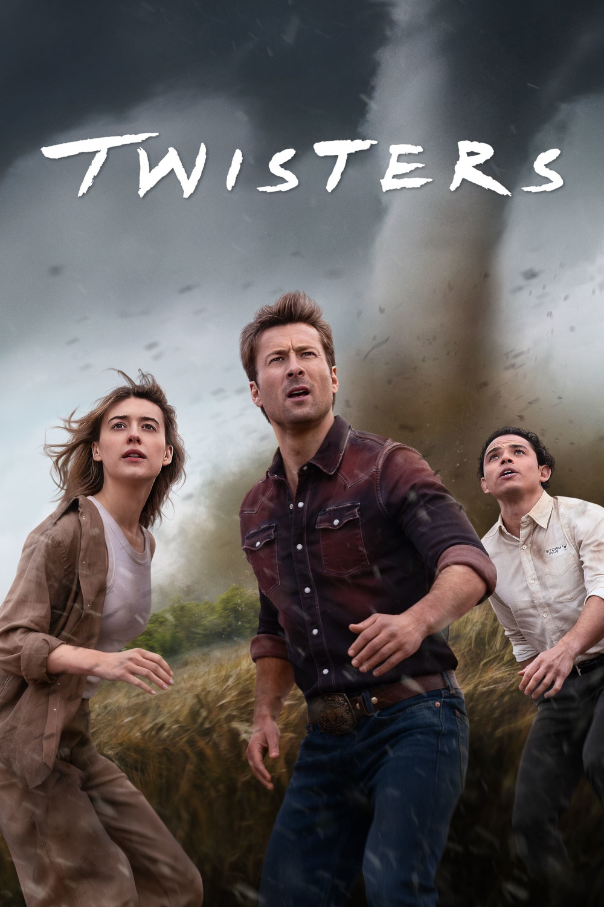

Мировая премьера: 19 июля 2024
Слоган: Тёмная сторона природы.
Сюжет: Кейт Картер – бывшая охотница за штормами, которую до сих пор преследует ужасающая встреча с торнадо во время учёбы в колледже. Теперь она изучает погоду в безопасной обстановке на экране, в Нью-Йорке. Однако друг Хави уговаривает её вернуться на открытые равнины, чтобы протестировать принципиально новую систему отслеживания ураганов. Там она встречается с Тайлером Оуэнсом, обаятельным и бесшабашным суперзвездой соцсетей, который живёт тем, что выкладывает репортажи о своих приключениях в погоне за торнадо вместе со своей шумной командой, и чем они опаснее, тем лучше. По мере приближения сезона штормов начинают происходить невиданные ранее ужасающие природные явления. Кейт, Тайлер и их конкурирующие команды оказываются непосредственно на пути нескольких штормов, сходящихся над центральной Оклахомой, и вынуждены бороться за свою жизнь.
Режиссёр: Ли Айзек Чун
Серия: Смерч
В ролях:
| Дэйзи Эдгар-Джонс | Кейт Картер |
| Глен Пауэлл | Тайлер Оуэнс |
| Энтони Рамос | Хави Ривера |
| Брэндон Переа | Бун |
| Дэвид Коренсвет | Скотт |
| Мора Тирни | Кэти Картер |
| Саша Лэйн | Лили |
| Гарри Хадден-Патон | Бен |
| Дэрил МакКормак | Джеб |
| Тунде Адебимпе | Декстер |
| Кэти О'Брайан | Дэни |
| Ник Додани | Правин |
| Кирнан Шипка | Эдди |
| Пол Шир | Полицейский в аэропорту |
Бюджет: $ 155 млн.
Кассовые сборы в США: $ 268 млн.
Кассовые сборы в мире: $ 372 млн.
Продолжительность: 1 ч. 54 мин.
Рейтинг: 6.5